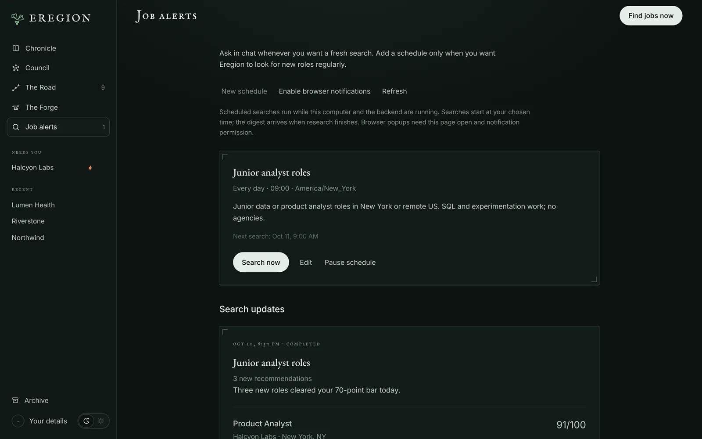
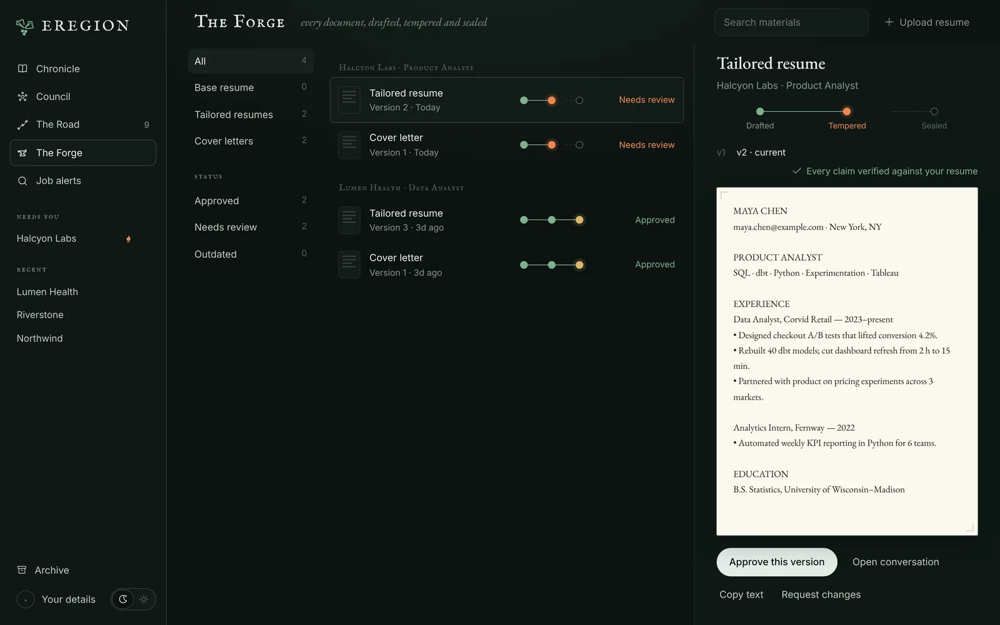
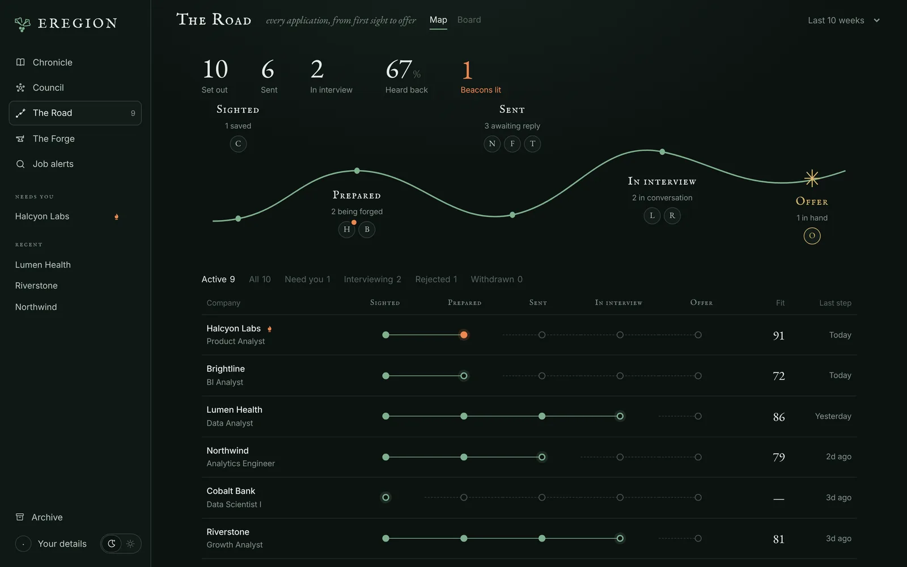

User guide
From first search
to final review.
Install Eregion, then follow a role from search to interview. Every example below is something you can type into a conversation.
Install
You need Python 3.12, Google Chrome, and an API key for an OpenAI-compatible model that supports tool calling and structured output. Download Eregion first, then follow the steps for your system.
-
Unzip and open a terminal in the folder
Or
cd Eregion-Agentif you cloned it. -
Create an environment and install
python3.12 -m venv .venv source .venv/bin/activate python -m pip install -r requirements.txt -
Connect your model
Create a file named
.envin the folder. Leave outLLM_BASE_URLif your provider uses the default endpoint.LLM_MODEL_ID=your-model-id LLM_API_KEY=your-api-key LLM_BASE_URL=https://your-provider.example/v1Optional: add these lines too for Jev fast fit scoring.
TYPESAFE_API_KEY=your-typesafe-key TYPESAFE_BASE_URL=https://api.typesafe.ai TYPESAFE_DEFAULT_MODEL=jev-latest TYPESAFE_ENABLED=true -
Start Eregion
Then open localhost:8000/apply and upload your resume.
python -m alembic upgrade head python -m uvicorn api.main:app --host 127.0.0.1 --port 8000
Set up your profile
Upload a PDF resume with selectable text using the + button in the message box. Eregion keeps the original file and extracts your details for later applications.
Open Your details and check contact information, schools, degrees, fields of study and dates. Keep finished and in-progress education distinct.
Find and compare roles
Describe the role, location, seniority and working arrangement you want. You can also paste a posting link, or paste a job description and say that it is one.
Find data analyst roles in New York that fit my resume. Show me the best matches and explain any gaps.
Eregion
I searched 4 job boards and 12 careers pages and shortlisted 9 roles. The strongest is Product Analyst at Halcyon Labs.
Product Analyst Halcyon Labs · New York
- SQL and dbt in production Resume, Corvid Retail
- A/B test design "lifted conversion 4.2%"
- Looker You list Tableau
Read the evidence and gaps alongside the number. A score describes what your resume shows; it does not predict an employer's decision. If a site blocked the full posting, the reply says so.
Automatic job search
Let Eregion look for new roles every day and bring you only the ones that clear your bar. Ask in chat, or open Job alerts → New schedule.
Every day at 9 AM in America/New_York, find new junior analyst roles in New York or remote US. Show the strongest matches.
What happens each day
- Eregion09:00The search starts at your time, in your timezone
- EregionBrowseJob boards, plus any careers sites you listed
- EregionScoreEach new posting against your resume
- EregionFilterKeeps roles at or above your minimum score, up to your limit
- YouDigestNew matches appear in Job alerts and in their conversation
Eregion does itNeeds you


| Setting | Default | What it controls |
|---|---|---|
| Roles, location and what matters | — | Your preferences in plain words |
| Preferred websites | None | Optional careers pages to include, one HTTPS link per line |
| Start searching at | 09:00 | Local time and timezone for the daily run |
| Maximum recommendations | 5 | Up to 10 per digest |
| Minimum match score | 70 | Roles below this are left out |
| Visual browser backup | Off | Lets non-login page screenshots reach your model for tricky pages |
Prepare and review materials
Ask for a tailored resume, a cover letter, or answers to application questions.
Tailor my resume and write a cover letter for this role. Keep every claim supported by my experience.
- Drafted
- written from your resume and the posting
- Tempered
- every claim checked against its source line, revised within a fixed number of attempts
- Sealed
- approved by you, for that exact version


Open The Forge or the cards in chat to read the content, the verification result and the version. Download the PDF and check its layout too. To change something, say so in the same chat.
Prepare an application
After you approve the materials, ask Eregion to apply. It works through the form in Chrome and stops where only you can decide.
- EregionOpenThe application page in Chrome
- EregionFillKnown details, including repeatable sections like education
- EregionAttachThe materials you approved
- YouAnswerMissing questions such as work authorization or consent
- YouSubmitYou inspect the finished form and press submit
Eregion does itNeeds you
When several questions are waiting, fill what you can and press Submit answers & continue once, or simply answer in chat. Editing a reviewed form can invalidate the review. If you're unsure whether a submission went through, check the employer's confirmation before trying again.
Watch or take over the browser
Open The Lookout from the conversation header to watch the agent's Chrome. Press Control browser when a site needs you, then resume the agent.
- Enter passwords in the secure account form, never in chat
- MFA, email codes, CAPTCHA and some single sign-on flows need you
- Visual browser backup sends requested screenshots to your model for difficult controls. It is off by default
Reuse confirmed answers
Your details and saved resume carry across applications and restarts. Remembered answers keep their original question and scope, and you can remove any that no longer apply.
Similar wording is not enough to reuse consent, immigration or employer-specific answers. New corrections win over old values, and generated drafts never become confirmed facts on their own.
Practise for interviews
Pick a saved role and ask for a mock interview. Answer each question in chat, read the feedback, then the final report.
Run a mock interview for the Lumen Health data analyst role. Five questions, mixed technical and behavioural.
Practice answers don't add new evidence to your resume.
Track every application
The Road shows every application as a map, a board or a table: how many you set out on, sent and heard back from, and which ones need you.


Bring a job from your browser
Eregion Lens is the optional Chrome extension. It opens in Chrome's side panel, extracts the job on the current tab, lets you correct it, and compares it with your resume.
- Start Eregion and upload your resume.
- Open
chrome://extensionsin Chrome 116 or later and turn on Developer mode. - Choose Load unpacked and select the
chrome_extensionfolder from the download. - Open a job posting and click the Eregion Lens icon.
Troubleshooting
| Symptom | What to check |
|---|---|
| The model does not reply | The model ID, provider access, balance and rate limits. Retry the saved task after fixing the provider error. |
| Chrome does not start | Install Google Chrome, and install requirements.txt in the same Python environment that runs the server. |
| A field cannot be filled | The browser's current choices or validation message. Correct the source fact or take over, then resume. |
| A PDF has no readable content | Upload a selectable-text PDF. Image-only scans are not supported. |
| Materials need review again | Whether the document version, job source, your details or preferences changed. |
| A scheduled search did not run | The schedule's timezone and enabled state, and whether the server was running. |
For setup problems, see the documentation.